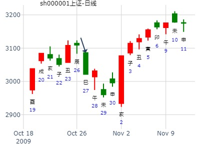

姓名：王 性别：男 占事：六爻能有效预测股市吗？
起卦方式：手动摇卦 中国预测网六爻排盘
公历时间：2022年1月29日21时58分 农历时间：辛丑年 十二月二十七日亥时
干支：辛丑年辛丑月壬午日辛亥时旬 空：辰巳 辰巳 申酉 寅卯
艮宫：火泽睽 艮宫：山泽损
六神 伏 神 【本 卦】 【变 卦】
白虎 ▄▄▄▄▄ 父母己巳火 ▄▄▄▄▄ 官鬼丙寅木 应螣蛇 妻财丙子水 ▄▄ ▄▄ 兄弟己未土 ▄▄ ▄▄ 妻财丙子水 勾陈 ▄▄▄▄▄ 子孙己酉金 世○ ▄▄ ▄▄ 兄弟丙戌土 朱雀 ▄▄ ▄▄ 兄弟丁丑土 ▄▄ ▄▄ 兄弟丁丑土 世青龙 ▄▄▄▄▄ 官鬼丁卯木 ▄▄▄▄▄ 官鬼丁卯木 玄武 ▄▄▄▄▄ 父母丁巳火 应 ▄▄▄▄▄ 父母丁巳火 睽：小事吉。彖曰：睽，火动而上，泽动而下； 二女同居，其志不同行；说而丽乎明，柔进而上行，得中而应乎刚；是以小事吉。 天地睽，而其事同也；男女睽，而其志通也；万物睽，而其事类也；睽之时用大矣哉！象曰：上火下泽，睽；君子以同而异。
九四：睽孤，遇元夫，交孚，厉无咎。
象曰：交孚无咎，志行也。
主帖标题: [原创]每日预测深沪两市大盘指数
公历时间：2008年2月4日9时30分 星期一
农历时间：丁亥年十二月廿八巳时
干支：丁亥年 癸丑月 甲戌日 己巳时 (旬空：申酉)
艮宫：火泽睽 艮宫：山泽损
六神 伏 神 【本 卦】 【变 卦】
玄武 ▅▅▅▅▅ 父母己巳火 ▅▅▅▅▅ 官鬼丙寅木 应
白虎 妻财丙子水 ▅▅ ▅▅ 兄弟己未土 ▅▅ ▅▅ 妻财丙子水
螣蛇 ▅▅▅▅▅ 子孙己酉金 世○→ ▅▅ ▅▅ 兄弟丙戌土
勾陈 ▅▅ ▅▅ 兄弟丁丑土 ▅▅ ▅▅ 兄弟丁丑土 世
朱雀 ▅▅▅▅▅ 官鬼丁卯木 ▅▅▅▅▅ 官鬼丁卯木
青龙 ▅▅▅▅▅ 父母丁巳火 应 ▅▅▅▅▅ 父母丁巳火
个股年卦：600718东软集团2015年走势。睽之损，子化兄酉化戌。.md
时间：2015年2月21日14点48分 星期六
干支：乙未年 戊寅月 戊辰日 己未时 （旬空：戌亥）
火泽睽 山泽损
朱雀 ▅▅▅▅▅ 父母巳火 ▅▅▅▅▅ 官鬼寅木 应
青龙 妻财子水▅▅ ▅▅ 兄弟未土 ▅▅ ▅▅ 妻财子水
玄武 ▅▅▅▅▅ 子孙酉金 世Ｏ→ ▅▅ ▅▅ 兄弟戌土
白虎 ▅▅ ▅▅ 兄弟丑土 ▅▅ ▅▅ 兄弟丑土 世
腾蛇 ▅▅▅▅▅ 官鬼卯木 ▅▅▅▅▅ 官鬼卯木
勾陈 ▅▅▅▅▅ 父母巳火 应 ▅▅▅▅▅ 父母巳火
九四：睽孤，遇元夫，交孚，厉无咎。
000858五粮液最近三个月会涨不？
公历起卦时间：2017年2月9日11时34分 (在线摇卦)
干支：丁酉年 壬寅月 丁卯日 丙午时 （日空：戌亥）
神煞：驿马－巳 桃花－子 日禄－午 贵人－酉，亥
艮宫：火泽睽 艮宫：山泽损
六神 伏神 本 卦 变 卦
青龙 父母己巳火 ▅▅▅▅▅ 官鬼丙寅木 ▅▅▅▅▅ 应
玄武 妻财丙子水 兄弟己未土 ▅▅ ▅▅ 妻财丙子水 ▅▅ ▅▅
白虎 子孙己酉金 ▅▅▅▅▅ 世 ○→ 兄弟丙戌土 ▅▅ ▅▅
腾蛇 兄弟丁丑土 ▅▅ ▅▅ 兄弟丁丑土 ▅▅ ▅▅ 世
勾陈 官鬼丁卯木 ▅▅▅▅▅ 官鬼丁卯木 ▅▅▅▅▅
朱雀 父母丁巳火 ▅▅▅▅▅ 应 父母丁巳火 ▅▅▅▅▅
何日卖出华电股份[600726]得财？起卦方式：手动摇卦 龙隐网(www.longyin.net)六爻线上排盘系统
公历时间：2007年3月29日15时35分
干支：丁亥年 癸卯月 壬戌日 戊申时 旬空：午未 辰巳 子丑 寅卯
火泽睽 山泽损
白虎 ▅▅▅▅▅ 父母巳火 ▅▅▅▅▅ 官鬼寅木 应
腾蛇 妻财子水▅▅ ▅▅ 兄弟未土 ▅▅ ▅▅ 妻财子水
勾陈 ▅▅▅▅▅ 子孙酉金 世Ｏ→ ▅▅ ▅▅ 兄弟戌土
朱雀 ▅▅ ▅▅ 兄弟丑土 ▅▅ ▅▅ 兄弟丑土 世
青龙 ▅▅▅▅▅ 官鬼卯木 ▅▅▅▅▅ 官鬼卯木
玄武 ▅▅▅▅▅ 父母巳火 应 ▅▅▅▅▅ 父母巳火
主帖标题: [09己丑岁个股跟踪预测实践]601628中国人寿与上日收盘对比涨跌！开市每天更新！
占事: 3月4日戊申日601628中国人寿与上日收盘对比涨跌！
起卦方式：手动摇卦 周易天地www.64gua.com六爻线上排盘系统
公历时间：2009年3月3日20时42分
干支：己丑年 丙寅月 丁未日 庚戌时 旬空：午未 戌亥 寅卯 寅卯
艮宫：火泽睽 艮宫：山泽损
青龙 ▄▄▄▄▄ 父母己巳火 ▄▄▄▄▄ 官鬼丙寅木 应玄武 妻财丙子水 ▄▄ ▄▄ 兄弟己未土 ▄▄ ▄▄ 妻财丙子水 白虎 ▄▄▄▄▄ 子孙己酉金 世O-> ▄▄ ▄▄ 兄弟丙戌土 螣蛇 ▄▄ ▄▄ 兄弟丁丑土 ▄▄ ▄▄ 兄弟丁丑土 世勾陈 ▄▄▄▄▄ 官鬼丁卯木 ▄▄▄▄▄ 官鬼丁卯木 朱雀 ▄▄▄▄▄ 父母丁巳火 应 ▄▄▄▄▄ 父母丁巳火
子临日，动化兄回生！财伏！下午跌！收盘跌！
[此贴子已经被作者于2009-3-3 20:42:51编辑过]
占事: 测大冶特钢本周走势？3.12
公历时间：2012年3月12日7时17分
干支：壬辰年 癸卯月 壬申日 甲辰时
旬空：午未 辰巳 戌亥 寅卯
艮宫：火泽睽 艮宫：山泽损
六神 伏 神 【本 卦】 【变 卦】
白虎 ▄▄▄▄▄ 父母己巳火 ▄▄▄▄▄ 官鬼丙寅木 应
螣蛇 妻财丙子水 ▄▄ ▄▄ 兄弟己未土 ▄▄ ▄▄ 妻财丙子水
勾陈 ▄▄▄▄▄ 子孙己酉金 世O-> ▄▄ ▄▄ 兄弟丙戌土
朱雀 ▄▄ ▄▄ 兄弟丁丑土 ▄▄ ▄▄ 兄弟丁丑土 世
青龙 ▄▄▄▄▄ 官鬼丁卯木 ▄▄▄▄▄ 官鬼丁卯木
玄武 ▄▄▄▄▄ 父母丁巳火 应 ▄▄▄▄▄ 父母丁巳火
九四：睽孤，遇元夫，交孚，厉无咎。象曰：交孚无咎，志行也。
关键： 戌亥空。完了又是申酉空。（动变爻在二天内轮流旬空）
13日酉大涨。但次日戌出空，则申酉旬空。冲高再大跌。
子日出伏又大涨。卯日冲空酉又涨。
主题：手摇:沪市在下周的行情走势如何
辛丑 辛卯 癸酉 戊午 (戌亥空) 辛丑年二月十三(2021/03/26 11:01:22)
火泽睽 山泽损
白虎 父母巳火 ／ 官鬼寅木 ／ 应
妻财子水：腾蛇 兄弟未土 ∥ 妻财子水 ∥
勾陈 子孙己酉 ○ 世 兄弟丙戌 ∥
朱雀 兄弟丑土 ∥ 兄弟丑土 ∥ 世
青龙 官鬼卯木 ／ 官鬼卯木 ／
玄武 父母巳火 ／ 应 父母巳火 ／
下周一是高点
证券下周 -风生水起 硬币卦
时间: 2025-03-29 09时06分
干支: 乙巳年己卯月丁酉日 (旬空: 辰巳 )
火泽睽 山泽损
六神 伏神 本 卦 变 卦
青龙 ▅▅▅▅▅ 父母巳火 ▅▅▅▅▅ 官鬼寅木 应
玄武 妻财子水▅▅ ▅▅ 兄弟未土 ▅▅ ▅▅ 妻财子水
白虎 ▅▅▅▅▅ 子孙酉金 世Ｏ→ ▅▅ ▅▅ 兄弟戌土
腾蛇 ▅▅ ▅▅ 兄弟丑土 ▅▅ ▅▅ 兄弟丑土 世
勾陈 ▅▅▅▅▅ 官鬼卯木 ▅▅▅▅▅ 官鬼卯木
朱雀 ▅▅▅▅▅ 父母巳火 应 ▅▅▅▅▅ 父母巳火
亥日冲实父母爻，跌。
午日是克子孙爻，大跌。
主帖标题: 测11日大盘
测上午上证大盘走势 起卦方式：手工指定 www.iqing.net 线上排盘系统公历时间：2007年4月11日11时11分 星期三
农历时间：丁亥年二月廿四午时
干支：丁亥年 甲辰月 乙亥日 壬午时 (旬空：申酉)
神煞：驿马—巳 桃花—子 日禄—卯 贵人—子，申
艮宫：火泽睽 艮宫：山泽损
六神 伏 神 【本 卦】 【变 卦】
玄武 ▅▅▅▅▅ 父母己巳火 ▅▅▅▅▅ 官鬼丙寅木 应
白虎 妻财丙子水 ▅▅ ▅▅ 兄弟己未土 ▅▅ ▅▅ 妻财丙子水
螣蛇 ▅▅▅▅▅ 子孙己酉金 世○→ ▅▅ ▅▅ 兄弟丙戌土
勾陈 ▅▅ ▅▅ 兄弟丁丑土 ▅▅ ▅▅ 兄弟丁丑土 世朱雀 ▅▅▅▅▅ 官鬼丁卯木 ▅▅▅▅▅ 官鬼丁卯木
青龙 ▅▅▅▅▅ 父母丁巳火 应 ▅▅▅▅▅ 父母丁巳火
测下午上证大盘走势出生年：年 性别：男 占事：
起卦方式：手工指定 www.iqing.net 线上排盘系统公历时间：2007年4月11日11时28分 星期三
农历时间：丁亥年二月廿四午时干支：丁亥年 甲辰月 乙亥日 壬午时 (旬空：申酉)神煞：驿马—巳 桃花—子 日禄—卯 贵人—子，申
巽宫：山雷颐（游魂） 坎宫：雷火丰
六神 伏 神 【本 卦】 【变 卦】
玄武 ▅▅▅▅▅ 兄弟丙寅木 ○→ ▅▅ ▅▅ 妻财庚戌土
白虎 子孙辛巳火 ▅▅ ▅▅ 父母丙子水 ▅▅ ▅▅ 官鬼庚申金 世螣蛇 ▅▅ ▅▅ 妻财丙戌土 世×→ ▅▅▅▅▅ 子孙庚午火
勾陈 官鬼辛酉金 ▅▅ ▅▅ 妻财庚辰土 ×→ ▅▅▅▅▅ 父母己亥水
朱雀 ▅▅ ▅▅ 兄弟庚寅木 ▅▅ ▅▅ 妻财己丑土 应青龙 ▅▅▅▅▅ 父母庚子水 应 ▅▅▅▅▅ 兄弟己卯木
占问：4月13日周五000969安泰科技“做空”可以胜出吗？起卦方式：手动摇卦
公历时间：2007年4月12日22时53分 星期四
农历时间：丁亥年二月廿五亥时
干支：丁亥年 甲辰月 丙子日 己亥时 (旬空：申酉)
神煞：驿马—寅 桃花—酉 日禄—巳 贵人—酉，亥
艮宫：火泽睽 艮宫：山泽损
六神 伏 神 【本 卦】 【变 卦】
青龙 ▅▅▅▅▅ 父母己巳火 ▅▅▅▅▅ 官鬼丙寅木 应
玄武 妻财丙子水 ▅▅ ▅▅ 兄弟己未土 ▅▅ ▅▅ 妻财丙子水
白虎 ▅▅▅▅▅ 子孙己酉金 世○→ ▅▅ ▅▅ 兄弟丙戌土
螣蛇 ▅▅ ▅▅ 兄弟丁丑土 ▅▅ ▅▅ 兄弟丁丑土 世
勾陈 ▅▅▅▅▅ 官鬼丁卯木 ▅▅▅▅▅ 官鬼丁卯木
朱雀 ▅▅▅▅▅ 父母丁巳火 应 ▅▅▅▅▅ 父母丁巳火
主帖标题: 2016丙申年上证指数每天预测实战探索（每天在回复中更新）
麦华盛 发表于 2016-4-8 23:47
占事：上证4-11涨跌
公历起卦时间：2016年4月8日23时47分 (按公历时间起卦)
农历：丙申年三月初二日子时
干支：丙申年 壬辰月 辛酉日 戊子时 （日空：子丑）
艮宫：火泽睽 艮宫：山泽损
腾蛇 父母己巳火 ▅▅▅▅▅ 官鬼丙寅木 ▅▅▅▅▅ 应
勾陈 妻财丙子水 兄弟己未土 ▅▅ ▅▅ 妻财丙子水 ▅▅ ▅▅
朱雀 子孙己酉金 ▅▅▅▅▅ 世 ○→ 兄弟丙戌土 ▅▅ ▅▅
青龙 兄弟丁丑土 ▅▅ ▅▅ 兄弟丁丑土 ▅▅ ▅▅ 世
玄武 官鬼丁卯木 ▅▅▅▅▅ 官鬼丁卯木 ▅▅▅▅▅
白虎 父母丁巳火 ▅▅▅▅▅ 应 父母丁巳火 ▅▅▅▅▅
燕塘乳业最近二周行情？ 自动卦 --王
时间: 2025-04-14 10时39分
干支: 乙巳年庚辰月癸丑日 (旬空: 寅卯 )
火泽睽 山泽损
六神 伏神 本 卦 变 卦
白虎 ▅▅▅▅▅ 父母巳火 ▅▅▅▅▅ 官鬼寅木 应
腾蛇 妻财子水▅▅ ▅▅ 兄弟未土 ▅▅ ▅▅ 妻财子水
勾陈 ▅▅▅▅▅ 子孙酉金 世Ｏ→ ▅▅ ▅▅ 兄弟戌土
朱雀 ▅▅ ▅▅ 兄弟丑土 ▅▅ ▅▅ 兄弟丑土 世
青龙 ▅▅▅▅▅ 官鬼卯木 ▅▅▅▅▅ 官鬼卯木
玄武 ▅▅▅▅▅ 父母巳火 应 ▅▅▅▅▅ 父母巳火
主帖标题: [原创]每日预测深沪两市大盘方向
公历时间：2008年5月16日9时30分 星期五
干支：戊子年 丁巳月 丙辰日 癸巳时 (旬空：子丑)
神煞：驿马—寅 桃花—酉 日禄—巳 贵人—酉，亥
艮宫：火泽睽 艮宫：山泽损
六神 伏 神 【本 卦】 【变 卦】
青龙 ▅▅▅▅▅ 父母己巳火 ▅▅▅▅▅ 官鬼丙寅木 应
玄武 妻财丙子水 ▅▅ ▅▅ 兄弟己未土 ▅▅ ▅▅ 妻财丙子水
白虎 ▅▅▅▅▅ 子孙己酉金 世○→ ▅▅ ▅▅ 兄弟丙戌土
螣蛇 ▅▅ ▅▅ 兄弟丁丑土 ▅▅ ▅▅ 兄弟丁丑土 世
勾陈 ▅▅▅▅▅ 官鬼丁卯木 ▅▅▅▅▅ 官鬼丁卯木
朱雀 ▅▅▅▅▅ 父母丁巳火 应 ▅▅▅▅▅ 父母丁巳火
主帖标题: 600291西水股份近期走势
性别：男 占事: 此股何日涨？起卦方式：手工指定 周易天地www.64gua.com六爻线上排盘系统 公历时间：2009年5月14日23时15分 农历时间：己丑年 四月二十一日子时干支：己丑年 己巳月 庚申日 丙子时 旬空：午未 戌亥 子丑 申酉 神煞：驿马─寅 桃花─酉 日禄─申 贵人─丑，未
艮宫：火泽睽 艮宫：山泽损
六神 伏 神 【本 卦】 【变 卦】
螣蛇 ▄▄▄▄▄ 父母己巳火 ▄▄▄▄▄ 官鬼丙寅木 应勾陈 妻财丙子水 ▄▄ ▄▄ 兄弟己未土 ▄▄ ▄▄ 妻财丙子水 朱雀 ▄▄▄▄▄ 子孙己酉金 世O-> ▄▄ ▄▄ 兄弟丙戌土 青龙 ▄▄ ▄▄ 兄弟丁丑土 ▄▄ ▄▄ 兄弟丁丑土 世玄武 ▄▄▄▄▄ 官鬼丁卯木 ▄▄▄▄▄ 官鬼丁卯木 白虎 ▄▄▄▄▄ 父母丁巳火 应 ▄▄▄▄▄ 父母丁巳火
你关于西水股份的分析，我同意。上卦请你分析一下，有反馈。谢谢。
易经预测上证走势看盘交流（2014年5月26日)
起卦方式：手工指定
2014年5月26日7时22分
干支：甲午年 己巳月 丁酉日 甲辰时 旬空：辰巳 戌亥 (辰巳) 寅卯
艮宫：火泽睽 艮宫：山泽损
[b]六神 伏 神 【本 卦】 【变 卦】[/b]
青龙 ▄▄▄▄▄ 父母己巳火 ▄▄▄▄▄ 官鬼丙寅木 应
玄武 妻财丙子水 ▄▄ ▄▄ 兄弟己未土 ▄▄ ▄▄ 妻财丙子水
白虎 ▄▄▄▄▄ 子孙己酉金 世O-> ▄▄ ▄▄ 兄弟丙戌土
螣蛇 ▄▄ ▄▄ 兄弟丁丑土 ▄▄ ▄▄ 兄弟丁丑土 世
勾陈 ▄▄▄▄▄ 官鬼丁卯木 ▄▄▄▄▄ 官鬼丁卯木
朱雀 ▄▄▄▄▄ 父母丁巳火 应 ▄▄▄▄▄ 父母丁巳火
九四：睽孤，遇元夫，交孚，厉无咎。
象曰：交孚无咎，志行也。
主帖标题: [09己丑岁每日大盘预测实践] 沪市大盘指数涨跌！开市日每天更新！
占事: 6月11日丁亥日沪市大盘指数涨跌！
起卦方式：手工指定 周易天地www.64gua.com六爻线上排盘系统
公历时间：2009年6月10日23时41分 农历时间：己丑年 五月十九日子时
干支：己丑年 庚午月 丁亥日 庚子时 旬空：午未 戌亥 午未 辰巳
神煞：驿马─巳 桃花─子 日禄─午 贵人─酉，亥
艮宫：火泽睽 艮宫：山泽损
六神 伏 神 【本 卦】 【变 卦】
青龙 ▄▄▄▄▄ 父母己巳火 ▄▄▄▄▄ 官鬼丙寅木 应
玄武 妻财丙子水 ▄▄ ▄▄ 兄弟己未土 ▄▄ ▄▄ 妻财丙子水
白虎 ▄▄▄▄▄ 子孙己酉金 世O-> ▄▄ ▄▄ 兄弟丙戌土
螣蛇 ▄▄ ▄▄ 兄弟丁丑土 ▄▄ ▄▄ 兄弟丁丑土 世
勾陈 ▄▄▄▄▄ 官鬼丁卯木 ▄▄▄▄▄ 官鬼丁卯木
朱雀 ▄▄▄▄▄ 父母丁巳火 应 ▄▄▄▄▄ 父母丁巳火
飞龙股份6.8壬午一至6.12哪日底？
公历起卦时间：2020年6月9日11时40分 (电脑自动)
干支：庚子年 壬午月 癸未日 戊午时 （日空：申酉）
艮宫：火泽睽 艮宫：山泽损
六神 伏神 本 卦 变 卦
白虎 父母己巳火 ▅▅▅▅▅ 官鬼丙寅木 ▅▅▅▅▅ 应
螣蛇 妻财丙子水 兄弟己未土 ▅▅ ▅▅ 妻财丙子水 ▅▅ ▅▅
勾陈 子孙己酉金 ▅▅▅▅▅ 世 ○→ 兄弟丙戌土 ▅▅ ▅▅
朱雀 兄弟丁丑土 ▅▅ ▅▅ 兄弟丁丑土 ▅▅ ▅▅ 世
青龙 官鬼丁卯木 ▅▅▅▅▅ 官鬼丁卯木 ▅▅▅▅▅
玄武 父母丁巳火 ▅▅▅▅▅ 应 父母丁巳火 ▅▅▅▅▅
主帖标题: [原创]每日预测深沪两市大盘方向
公历时间：2008年7月21日9时30分 星期一
干支：戊子年 己未月 壬戌日 乙巳时 (旬空：子丑)
神煞：驿马—申 桃花—卯 日禄—亥 贵人—卯，巳
艮宫：火泽睽 艮宫：山泽损
六神 伏 神 【本 卦】 【变 卦】
白虎 ▅▅▅▅▅ 父母己巳火 ▅▅▅▅▅ 官鬼丙寅木 应
螣蛇 妻财丙子水 ▅▅ ▅▅ 兄弟己未土 ▅▅ ▅▅ 妻财丙子水
勾陈 ▅▅▅▅▅ 子孙己酉金 世○→ ▅▅ ▅▅ 兄弟丙戌土
朱雀 ▅▅ ▅▅ 兄弟丁丑土 ▅▅ ▅▅ 兄弟丁丑土 世
青龙 ▅▅▅▅▅ 官鬼丁卯木 ▅▅▅▅▅ 官鬼丁卯木
玄武 ▅▅▅▅▅ 父母丁巳火 应 ▅▅▅▅▅ 父母丁巳火
上证指数2409点位趋势 冰山
起卦方式：铜钱摇卦
占问事宜：上证指数2409点位趋势
起卦公历：2010年7月7日8时5分(北京时间)。
干支： 庚寅年 壬午月 戊午日 丙辰时
火泽睽 水火既济 山泽损
【主卦】 【互卦】 【变卦】
▅▅▅▅▅ ▅▅ ▅▅ ▅▅▅▅▅
▅▅ ▅▅ ▅▅▅▅▅ ▅▅ ▅▅
▅▅▅▅▅○ ▅▅ ▅▅ ▅▅ ▅▅
▅▅ ▅▅ ▅▅▅▅▅ ▅▅ ▅▅
▅▅▅▅▅ ▅▅ ▅▅ ▅▅▅▅▅
▅▅▅▅▅ ▅▅▅▅▅ ▅▅▅▅▅
◇九四:睽孤，遇元夫，交孚。厉、无咎。
象曰：交孚无咎，志行也。
断：
反弹行情开始展开。上升趋势---------志行也。反弹非反转---------二女同居，其志不同行；柔进而上行；小事吉。
主帖标题: 重组掀起涨停风暴
600112，ST天成今天走势 断：收盘上涨
公历：2019-07-05 09:11
农历：2019年06月03日 甲午旬 辰巳空
己亥年庚午月癸卯日丁巳时
神煞：驿马-巳 桃花-子 日禄-子 贵人-卯,巳
火泽睽(艮宫 ) 山泽损(艮宫 )
▄▄▄▄▄己巳火父母 白虎 应▄▄▄▄▄丙寅木官鬼
▄▄ ▄▄己未土兄弟 滕蛇 ▄▄ ▄▄丙子水妻财
世▄▄▄▄▄己酉金子孙 勾陈 ○─→ ▄▄ ▄▄丙戌土兄弟
▄▄ ▄▄丁丑土兄弟 朱雀 世▄▄ ▄▄丁丑土兄弟
▄▄▄▄▄丁卯木官鬼 青龙 ▄▄▄▄▄丁卯木官鬼
应▄▄▄▄▄丁巳火父母 玄武 ▄▄▄▄▄丁巳火父母
主帖标题: [原创]每日预测深沪两市大盘方向
公历时间：2008年8月25日9时30分 星期一农历时间：戊子年七月廿五巳时干支：戊子年 庚申月 丁酉日 乙巳时 (旬空：辰巳)
神煞：驿马—亥 桃花—午 日禄—午 贵人—酉，亥
艮宫：火泽睽 艮宫：山泽损
六神 伏 神 【本 卦】 【变 卦】
青龙 ▅▅▅▅▅ 父母己巳火 ▅▅▅▅▅ 官鬼丙寅木 应
玄武 妻财丙子水 ▅▅ ▅▅ 兄弟己未土 ▅▅ ▅▅ 妻财丙子水
白虎 ▅▅▅▅▅ 子孙己酉金 世○→ ▅▅ ▅▅ 兄弟丙戌土
螣蛇 ▅▅ ▅▅ 兄弟丁丑土 ▅▅ ▅▅ 兄弟丁丑土 世
勾陈 ▅▅▅▅▅ 官鬼丁卯木 ▅▅▅▅▅ 官鬼丁卯木
朱雀 ▅▅▅▅▅ 父母丁巳火 应 ▅▅▅▅▅ 父母丁巳火

今天大盘。睽之损，子化兄酉化戌。辰日冲戌合酉。双重象。辰戌关系。.md
时间: 2014-08-13 6时53分
干支: 甲午年壬申月丙辰日 (旬空: 子丑 )
火泽睽 山泽损
六神 伏神 本 卦 变 卦
青龙 ▅▅▅▅▅ 父母巳火 ▅▅▅▅▅ 官鬼寅木 应
玄武 妻财子水▅▅ ▅▅ 兄弟未土 ▅▅ ▅▅ 妻财子水
白虎 ▅▅▅▅▅ 子孙酉金 世Ｏ→ ▅▅ ▅▅ 兄弟戌土
腾蛇 ▅▅ ▅▅ 兄弟丑土 ▅▅ ▅▅ 兄弟丑土 世
勾陈 ▅▅▅▅▅ 官鬼卯木 ▅▅▅▅▅ 官鬼卯木
朱雀 ▅▅▅▅▅ 父母巳火 应 ▅▅▅▅▅ 父母巳火
主帖标题: [原创]每日预测深沪两市大盘方向
公历时间：2008年9月17日9时30分 星期三
干支：戊子年 辛酉月 庚申日 辛巳时 (旬空：子丑)
神煞：驿马—寅 桃花—酉 日禄—申 贵人—寅，午
艮宫：火泽睽 艮宫：山泽损
六神 伏 神 【本 卦】 【变 卦】
螣蛇 ▅▅▅▅▅ 父母己巳火 ▅▅▅▅▅ 官鬼丙寅木 应
勾陈 妻财丙子水 ▅▅ ▅▅ 兄弟己未土 ▅▅ ▅▅ 妻财丙子水
朱雀 ▅▅▅▅▅ 子孙己酉金 世○→ ▅▅ ▅▅ 兄弟丙戌土
青龙 ▅▅ ▅▅ 兄弟丁丑土 ▅▅ ▅▅ 兄弟丁丑土 世
玄武 ▅▅▅▅▅ 官鬼丁卯木 ▅▅▅▅▅ 官鬼丁卯木
白虎 ▅▅▅▅▅ 父母丁巳火 应 ▅▅▅▅▅ 父母丁巳火
睽之损，子化兄，酉化戌，数理卦。暴涨。
收盘价2999测9月17号大盘。
公历：2009年9月17日9时29分 星期四 北京时间
干支：己丑年 癸酉月 乙丑日 辛巳时
旬空：午未 戌亥 戌亥 申酉
酉月 乙丑日 （旬空：戌亥）
艮：火泽睽 艮：山泽损
六神 伏 神 【本 卦】 【变 卦】
玄武 ▅▅▅▅▅ 父母己巳火 ▅▅▅▅▅ 官鬼丙寅木 应
白虎 妻财丙子水 ▅▅ ▅▅ 兄弟己未土 ▅▅ ▅▅ 妻财丙子水
螣蛇 ▅▅▅▅▅ 子孙己酉金 世○→ ▅▅ ▅▅ 兄弟丙戌土
勾陈 ▅▅ ▅▅ 兄弟丁丑土 ▅▅ ▅▅ 兄弟丁丑土 世
朱雀 ▅▅▅▅▅ 官鬼丁卯木 ▅▅▅▅▅ 官鬼丁卯木
青龙 ▅▅▅▅▅ 父母丁巳火 应 ▅▅▅▅▅ 父母丁巳火
◇九四:睽孤，遇元夫，交孚。厉、无咎。
象曰：交孚无咎，志行也。
大涨。火在上，电子信息类大涨。
主帖标题: 10月上证指数每日预测 准确率61%
：年 性别：男 占事: 27
起卦方式：手动摇卦 周易天地www.64gua.com六爻线上排盘系统
公历时间：2009年10月27日9时20分 农历时间：己丑年 九月十日巳时
干支：己丑年 甲戌月 乙巳日 辛巳时
旬空：午未 申酉 寅卯 申酉
神煞：驿马─亥 桃花─午 日禄─卯 贵人─子，申
艮宫：火泽睽 艮宫：山泽损
六神 伏 神 【本 卦】 【变 卦】
玄武 ▄▄▄▄▄ 父母己巳火 ▄▄▄▄▄ 官鬼丙寅木 应
白虎 妻财丙子水 ▄▄ ▄▄ 兄弟己未土 ▄▄ ▄▄ 妻财丙子水
螣蛇 ▄▄▄▄▄ 子孙己酉金 世O-> ▄▄ ▄▄ 兄弟丙戌土
勾陈 ▄▄ ▄▄ 兄弟丁丑土 ▄▄ ▄▄ 兄弟丁丑土 世
朱雀 ▄▄▄▄▄ 官鬼丁卯木 ▄▄▄▄▄ 官鬼丁卯木
青龙 ▄▄▄▄▄ 父母丁巳火 应 ▄▄▄▄▄ 父母丁巳火
九四：睽孤，遇元夫，交孚，厉无咎。
象曰：交孚无咎，志行也。

占事：（10月第2周）下周大盘涨跌如何？ 王
起卦方式：手动摇卦
公历时间：2014年10月10日19时24分
干 支：甲午年 甲戌月 甲寅日 甲戌时 旬空：辰巳 申酉 (子丑) 申酉
艮宫：火泽睽 艮宫：山泽损
六神 伏 神 【本 卦】 【变 卦】
玄武 ▄▄▄▄▄ 父母己巳火 ▄▄▄▄▄ 官鬼丙寅木 应
白虎 妻财丙子水 ▄▄ ▄▄ 兄弟己未土 ▄▄ ▄▄ 妻财丙子水
螣蛇 ▄▄▄▄▄ 子孙己酉金 世O-> ▄▄ ▄▄ 兄弟丙戌土
勾陈 ▄▄ ▄▄ 兄弟丁丑土 ▄▄ ▄▄ 兄弟丁丑土 世
朱雀 ▄▄▄▄▄ 官鬼丁卯木 ▄▄▄▄▄ 官鬼丁卯木
青龙 ▄▄▄▄▄ 父母丁巳火 应 ▄▄▄▄▄ 父母丁巳火
九四：睽孤，遇元夫，交孚，厉无咎。
象曰：交孚无咎，志行也。 注： 财爻真空不受生。伏空被飞神克。
MACD论坛：善因先生。睽之损。2017年丁酉年卦。
时间: 2016-11-07 干支: 丙申年己亥月癸巳日 (旬空: 午未 )
干支：丙申年 己亥月 癸巳日 戊午时 (卦身：酉),
问明年上证升跌走势. 用《梅花易数》起卦得:
火泽睽 水火既济 山泽损
【主卦】 【互卦】 【变卦】
▅▅▅▅▅ ▅▅ ▅▅ ▅▅▅▅▅
▅▅ ▅▅ ▅▅▅▅▅ ▅▅ ▅▅
▅▅▅▅▅○ ▅▅ ▅▅ ▅▅ ▅▅
▅▅ ▅▅ ▅▅▅▅▅ ▅▅ ▅▅
▅▅▅▅▅ ▅▅ ▅▅ ▅▅▅▅▅
▅▅▅▅▅ ▅▅▅▅▅ ▅▅▅▅▅
让我们再看丁酉鸡年的上证年签:
丁酉年的上证年签: 观音灵签：四二签 典故：目莲见母 宫位：酉宫 吉凶：上签
诗曰 君皇圣后终为恩 复待祈禳无损增
艮宫：火泽睽 艮宫：山泽损
六神 伏神 本 卦 变 卦
青龙 父母己巳火 ▅▅▅▅▅ 官鬼丙寅木 ▅▅▅▅▅ 应
玄武 妻财丙子水 兄弟己未土 ▅▅ ▅▅ 妻财丙子水 ▅▅ ▅▅
白虎 子孙己酉金 ▅▅▅▅▅ 世 ○→ 兄弟丙戌土 ▅▅ ▅▅
腾蛇 兄弟丁丑土 ▅▅ ▅▅ 兄弟丁丑土 ▅▅ ▅▅ 世
勾陈 官鬼丁卯木 ▅▅▅▅▅ 官鬼丁卯木 ▅▅▅▅▅
朱雀 父母丁巳火 ▅▅▅▅▅ 应 父母丁巳火 ▅▅▅▅▅
潍柴动力本周走势
公历起卦时间：2020年11月30日11时5分 (按农历时间起卦)
干支：庚子年 丁亥月 丁丑日 丙午时 （日空：申酉） 艮宫：火泽睽 艮宫：山泽损
青龙 父母己巳火 ▅▅▅▅▅ 官鬼丙寅木 ▅▅▅▅▅ 应
玄武 妻财丙子水 兄弟己未土 ▅▅ ▅▅ 妻财丙子水 ▅▅ ▅▅
白虎 子孙己酉金 ▅▅▅▅▅ 世 ○→ 兄弟丙戌土 ▅▅ ▅▅
螣蛇 兄弟丁丑土 ▅▅ ▅▅ 兄弟丁丑土 ▅▅ ▅▅ 世
勾陈 官鬼丁卯木 ▅▅▅▅▅ 官鬼丁卯木 ▅▅▅▅▅
朱雀 父母丁巳火 ▅▅▅▅▅ 应 父母丁巳火 ▅▅▅▅▅
潍柴动力本周走势。丑日：跌。 跌幅3%。寅日：官父旺。涨。 实际涨。卯日孙冲空填实，官旺，克兄，但是卯日和兄弟合，不好。实际该日涨幅为0. 辰日：辰日冲戌，合孙，略偏多。巳日：父母旺，兄旺，涨。
卦例留存。
出生年：年 性别：女 占事: 22-26
公历时间：2014年12月20日21时55分
干支：甲午年 丙子月 乙丑日 丁亥时 旬空：辰巳 申酉 戌亥 午未
艮宫：火泽睽 艮宫：山泽损
六神 伏 神 【本 卦】 【变 卦】
玄武 ▄▄▄▄▄ 父母己巳火 ▄▄▄▄▄ 官鬼丙寅木 应
白虎 妻财丙子水 ▄▄ ▄▄ 兄弟己未土 ▄▄ ▄▄ 妻财丙子水
螣蛇 ▄▄▄▄▄ 子孙己酉金 世O-> ▄▄ ▄▄ 兄弟丙戌土
勾陈 ▄▄ ▄▄ 兄弟丁丑土 ▄▄ ▄▄ 兄弟丁丑土 世
朱雀 ▄▄▄▄▄ 官鬼丁卯木 ▄▄▄▄▄ 官鬼丁卯木
青龙 ▄▄▄▄▄ 父母丁巳火 应 ▄▄▄▄▄ 父母丁巳火
出生年：年 性别：女 占事: 29-31
起卦方式：手动摇卦 周易天地www.64gua.com六爻线上排盘系统
公历时间：2014年12月29日15时2分 农历时间：甲午年 十一月初八日申时
干支：甲午年 丙子月 甲戌日 壬申时
旬空：辰巳 申酉 申酉 戌亥
神煞：驿马─申 桃花─卯 日禄─寅 贵人─丑，未
离宫：火山旅 乾宫：天地否（六合）
六神 伏 神 【本 卦】 【变 卦】
玄武 ▄▄▄▄▄ 兄弟己巳火 ▄▄▄▄▄ 子孙壬戌土 应
白虎 ▄▄ ▄▄ 子孙己未土 X-> ▄▄▄▄▄ 妻财壬申金
螣蛇 ▄▄▄▄▄ 妻财己酉金 应 ▄▄▄▄▄ 兄弟壬午火
勾陈 官鬼己亥水 ▄▄▄▄▄ 妻财丙申金 O-> ▄▄ ▄▄ 父母乙卯木 世
朱雀 ▄▄ ▄▄ 兄弟丙午火 ▄▄ ▄▄ 兄弟乙巳火
青龙 父母己卯木 ▄▄ ▄▄ 子孙丙辰土 世 ▄▄ ▄▄ 子孙乙未土
安圆圆 占事：山河智能在2015年的走势如何
公历起卦时间：2014年12月25日10时32分 (手工指定)
干支：甲午年 丙子月 庚午日 辛巳时 （日空：戌亥）
艮宫：火泽睽 艮宫：山泽损
六神 伏神 本 卦 变 卦
腾蛇 父母己巳火 ▅▅▅▅▅ 官鬼丙寅木 ▅▅▅▅▅ 应
勾陈 妻财丙子水 兄弟己未土 ▅▅ ▅▅ 妻财丙子水 ▅▅ ▅▅
朱雀 子孙己酉金 ▅▅▅▅▅ 世 ○→ 兄弟丙戌土 ▅▅ ▅▅
青龙 兄弟丁丑土 ▅▅ ▅▅ 兄弟丁丑土 ▅▅ ▅▅ 世
玄武 官鬼丁卯木 ▅▅▅▅▅ 官鬼丁卯木 ▅▅▅▅▅
白虎 父母丁巳火 ▅▅▅▅▅ 应 父母丁巳火 ▅▅▅▅▅
辰月也是大震荡。辰冲戌，子孙原神被冲。墓财。
个股年卦：600718东软集团2015年走势。睽之损，子化兄酉化戌。
睽之损，世子化兄酉化戌。10月第二周卦。